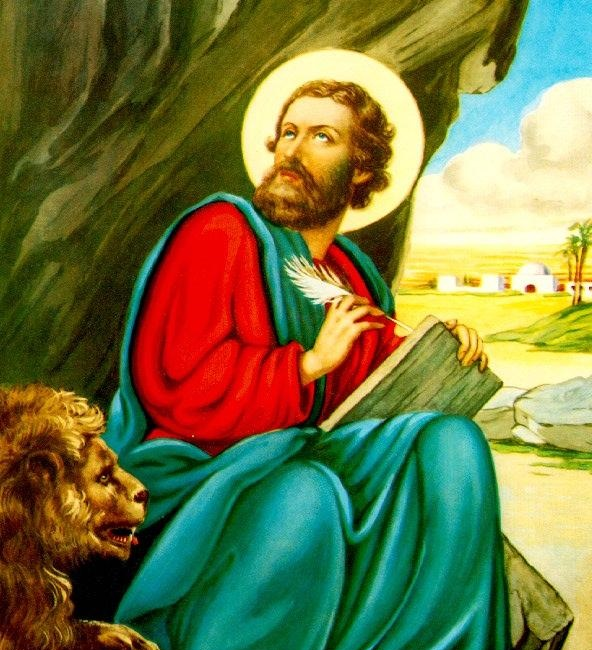

| الترتيب البابوي: | مؤسس الكرسي الإسكندري والبطريرك الأول |
| اللقب الكنسي: | كاروز الديار المصرية / ناظر الإله الإنجيلي |
| فترة الرعاية: | من تأسيس الكنيسة في مصر (حوالي 61م) حتى استشهاده عام 68م |
| مكان الميلاد: | القيروان (ليبيا الحالية) |
يُعد القديس مارمرقس أحد السبعين رسولاً الذين اختارهم السيد المسيح. كان بيته أول كنيسة مسيحية في العالم (العليّة)، حيث أكل الفصح مع تلاميذه وغسل أرجلهم، وفي بيته حل الروح القدس على التلاميذ. امتدت رحلته التبشيرية من أورشليم إلى أنطاكية وقبرص وروما، ثم انطلق إلى شمال أفريقيا وصولاً إلى الإرسالية التاريخية في الإسكندرية بمصر حوالي عام 61 ميلادية.
استشهد في الإسكندرية عام 68م على يد الوثنيين الذين سحلوه في شوارع المدينة لتمسكه بالإيمان المسيحي ورفضه عبادة الأوثان.
من أشهر آيات إنجيله المأثورة: "كُلُّ شَيْءٍ مُسْتَطَاعٌ لِلْمُؤْمِنِ." (مرقس 9: 23)